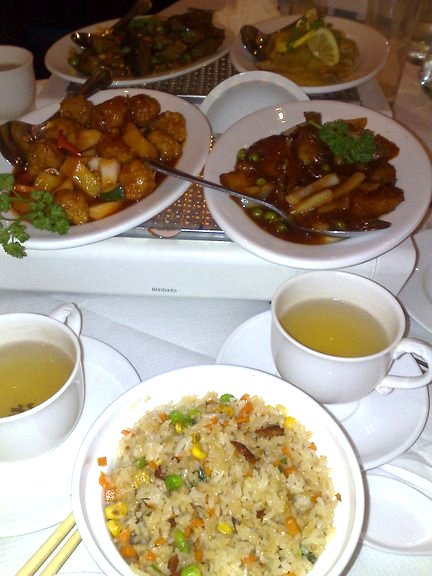
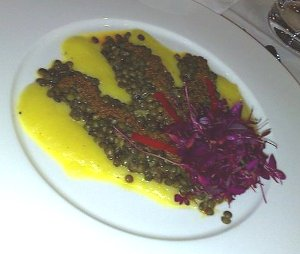

The Best London Restaurants for Vegans
London is one of the best cities in the world for vegan epicureans. With over 160 vegetarian restaurants in the City alone, all of them with vegan options, you can go to a new one every week for three years, and by then a few more will have opened up.
So having lived in London for six years, here is my opinion on the best restaurants I visited. Indian restaurants figure pretty highly here, because in my opinion London has some of the best Indian vegetarian restaurants I've been to. Of course it's hard to compare across cuisines, but I'll do my best.

Manna
Manna Vegetarian is the oldest vegetarian restaurant still established in London, having been started decades ago and went completely vegan a few years ago. A refreshing few minutes walk from Chalk Farm tube station, it has the sort of atmosphere perfect for special occasions. The food is always beautifully presented, and the menu always has some interesting ingredients and unusual things to try. This is the first place I ever had caper berries for instance. The main difference between going to a vegetarian and a vegan restaurant is that there are plenty of dessert options. Price wise it is in the upper range of vegetarian restaurants, but well worth every penny. If you haven't been to Manna, it could be the best in London, one of the best in the world, so book now and find out for yourself.
222
222 Veggie Vegan in West Kensington is an almost exclusively vegan restaurant, though they do have milk for coffees etc. I've been there a few times for dinner and the most times it has been just lovely. Once or twice I haven't been inspired by what I was served, but that was ages ago and everytime I've been there since it has been great. Their lunch buffet is always tasty, healthy and fantastic value, actually I'd give their lunch buffet the prize for hidden gems of London for vegans. Their ice creams are also some of the best in London, though share with a friend as they are super sweet. This place is what everyday vegan food is about, for me this is a good place for groups of friends, certain on getting a decent meal, in a setting nice enough for any occasion. Price wise I'd rate the buffet as a bargain and their dinner meals as regular restaurant prices.
Vanilla Black
Vanilla Black near Chancery Lane Tube is the poshest vegetarian restaurant in London. A very vegetarian heavy menu, when I went we mentioned we were vegans when booking and they printed out a special list for each of us. The entree I had there (deconstructed puy lentil daal, picture below) was one of the loveliest things I have ever eaten, and the desserts were all magnificent. This is the most expensive meal I've had in London (not including drinks) but it was a work of art. Highly recommended, you just have to go there at least once, but please make sure you let them know you are vegan. Also the area around it has some of the loveliest buildings in London, the Law Courts, Kings College, the law Inns of London, so go for a walk to work up an appetite before hand beforehand.
Sagar
I love Indian food, and in London Sagar is never too far away. Sagar Vegetarian has three branches, one in Hammersmith and two in central London, one just off Tottenham Court Road and the other in Covent Garden. I first went here on a friends recommendation for my birthday, and it was wonderful, at the end they made us a giant dosa we were all too full to finish. Of a group of eighteen with only two vegetarians, all my friends went away full and happy, some even returning later on their own, which is high praise from our carnist friends. The Dosa's are wonderful, the Onion Rave Masala one I find hard to resist, and their channa masala is far and away the best I have ever had. My recommendation is go with friends, ask for the special vegan menu and share everything, after all that's how Indian food really should be eaten. Reasonably priced and wonderful cuisine, I wish I was there now.
Vita Organics
The cheapest of the restaurants on this page, Vita Organics doesn't mess around creating web sites when they could be putting that energy into making a great vegan selection. Organic and Vegan, this oasis in Soho in the centre of London is the place I've eaten at perhaps more than any other in the city. This is also the only restaurant at which I have had a three course raw meal...which wasn't as good as their other offerings actually, but still a great experience. Magnificent juices, cakes, you choose and pay for dishes according to scoops, which can range anywhere from one to seven. Working class prices (particularly if you go at off peak times), this place is the deserved vegan staple of London. The people who founded it have also opened another restaurant, Vantra, just off Oxford Circus, so another one to check out.
SAF
SAF is located in the Wholefoods Market, High St Kensington and vies with Manna as the best vegan restaurant in London. I'm lucky enough to have also stumbled across their deli in Munich, providing some delicious and much needed lining in my stomache on the way to Oktoberfest. When I went to their London restaurant my lovely friend and I ordered the tasting menu, which was interesting and delicious. When you start out with vegan, organic, raw (ish) food, prepared in wonderfully creative ways you can't go too wrong. The tasting menu is probably not the option for the budget conscious, and even if you don't splash out on that but have a couple of their wonderful (wonderful!) cocktails and a bottle or two of vegan organic wine, well it starts to tally up quite quickly so be careful with the wallet. SAF is a wonderful enigma, you'll eat things you've never tasted before, you need to go.

Woodlands
Woodlands Vegetarian seems to be something of a controversial restaurant here in London as opinion seems mixed. In fact after taking a non veg friend there, he was going to revisit because he enjoyed it so much however the bad reviews put him off. Now I should say they have a few branches in London so it's possible they vary, but I've been to three now and maybe I've had one indifferent meal but the rest have been simply fabulous. I've taken large groups of ten to twenty people there three times, as well as going myself a couple more, and it has always been not only great, but often sublime. They have a Thali there which includes a Dosa and an Uttupam, which is the best Thali I have ever had bar none. I also had a vegetable dumpling dish there once which was amazing, from their seasonal menus such as at Diwali. So I can only say go to the one in Piccadilly, order one of their Thali's, savour a beautiful, and be as mystified as me by the reviews. Price wise, it's more expensive than other veg Indians in London, but to have such great food is worth it.
Itadaki Zen
An organic vegan Japanese restaurant...when I heard that was opening up I got pretty excited. Being down the road from a snooker club I frequented, I ate here almost weekly and was never dissappointed. I love Japanese food, the simplicity but perfection of the blend of flavours, each one distinct and contemplating the others. You can get great sushi sets, benta boxes, and their lovely rice noodles and tempura. Now the food takes a long time to prepare, especially if you have a larger table, so keep that in mind before you go. You are blessed to have this restaurant in London, very few places in the world outside of Japan are so lucky, so make sure you visit it and take in the contemplative atmosphere, of carefully prepared food.
After thoughts
OK I could go on but I will end it there, but if you visited these it would give you one a wonderful taste of what London has to offer. There are a number which almost made the list, Rasa vegetarian Indian in Stoke Newington made some of the best meals I ever had but I'm sometimes dubious about their understanding of vegan, The Gate vegetarian in Hammersmith is super cool and a great date place, but the food isn't quite as profound as I'd hoped and their vegan options aren't great, Mildred's vegetarian in Soho serves up predictably great food but not being able to book a table makes it a difficult place to recommend, Beatroot vegetarian, also in Soho is one of the best places for a quick lunch around, but eating out of a cardboard box isn't for everyone and they don't understand the concept that if you only want one or two things, it doesn't mean you want a mainly empty box, if you are a cake fan Inspiral Lounge in Camden is your friend, Pogo's in Hackney for Sunday breakfast is absolutely perfect, really you have to try it, Peking Palace in Archway is a wonderful place for those who like chinese style "mock" cooking, and Drummond St in Euston has three wonderful vegetarian Indian restaurants in Ravi Shanka, Chutneys and Diwana's with the first just pipping the last for amazing lunch buffet. My friend Salim thinks that Ravi Shanka's on the is the best Indian place in London, and I did once had a paper dosa there which made me ponder how it could be more perfect as I ate it. Then you have the amazing Tibit's vegetarian off Regent St which is a fantastic buffet and is getting better for vegans by the year. I've limited myself to London as I know it well, but there's also some great vegetarian restaurants outside of London, Demuth's in Bath, Terre a Terre and Food for Friends in Brighton are some which spring to mind, also great places to visit. Actually I would have to rate Terre a Terre as the best in the UK, slightly pipping Manna and Saf, and up their with Yu Shan Ge in Taipei and Millenium in San Francisco as the best in the world.
So, hope that has made you hungry, and given you some ideas on where you can get amazing vegan cuisine in London. Now I don't live in London I miss having access to such wonderful restaurants, so make sure you take advantage of it!